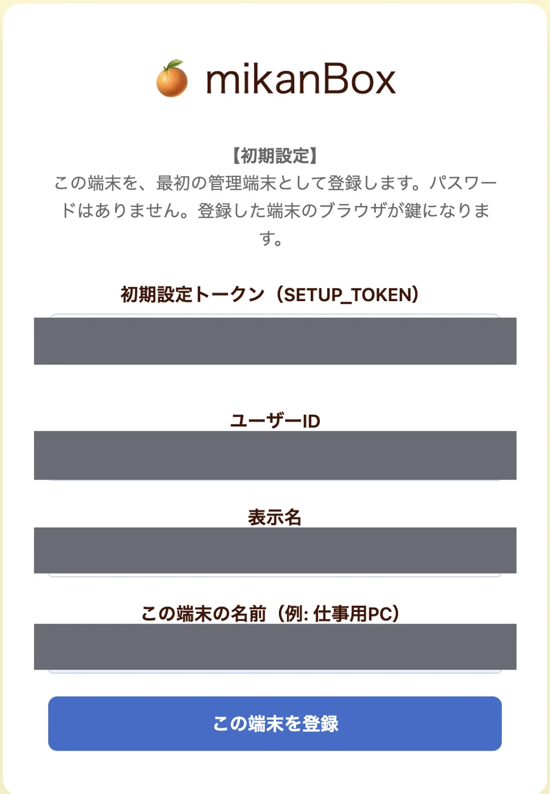
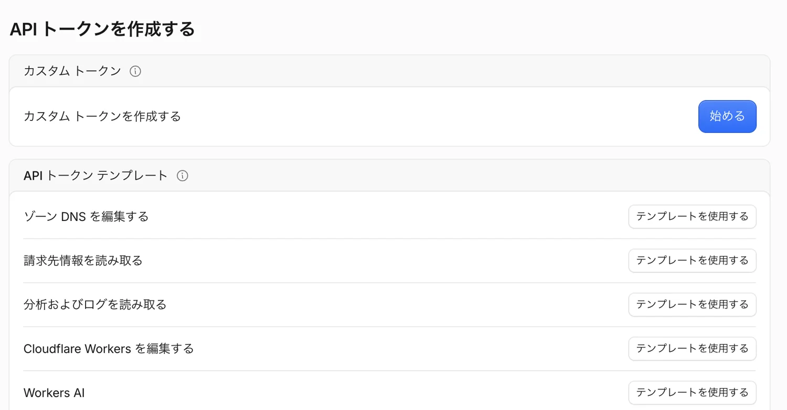

Cloudflareに
インストールする
管理画面と公開サイトを作り、最初のページを公開するまで。画像を見ながら、順番に進めます。
01 最初に準備する
STEP 01アカウントとパソコンを用意する
Cloudflareのアカウントと、ターミナルを使えるパソコンが必要です。GitHubアカウントは、GitHub Actionsによるアップデートを使う場合に必要です。
- Cloudflareのアカウントがなければ、Cloudflareの登録画面から作成し、ログインします。
- パソコンに Node.js（22以上）をインストールします。npmも一緒に用意されます。
- mikanBox Cloudflare版のリリースを開き、使用するリリースの Source code (zip) をダウンロードして展開します。
以下のコマンドは、展開したフォルダをターミナルで開いて実行します。
STEP 02管理と公開のアドレスを決める
管理画面と公開サイトには別々の名前を使います。共通の workers.dev サブドメインはCloudflareアカウントごとに設定します。
https://管理用の名前.サブドメイン.workers.dev/admin公開サイト：
https://公開用の名前.サブドメイン.workers.dev/アカウントにまだサブドメインがない場合は、Cloudflare側で登録します。すでに登録済みならそのサブドメインを使います。サブドメインは公開されます。メールアドレスやログインIDを使わず、自分で選びます。公開サイトには独自ドメインも使え、後から設定することもできます。既存のWorkerと同じ名前を使わないよう確認してください。
02 Cloudflareにログイン
STEP 03必要なツールを準備する
展開したフォルダで、次を順番に実行します。
npm ci
npx wrangler loginブラウザが開き、Cloudflareへのアクセス許可が表示されます。設置先のアカウントを確認し、Authorize を押してください。

認可完了画面が出たらターミナルに戻り、次のコマンドでアカウントを確認します。
npx wrangler whoami03 サイトを作る
STEP 04データベースを作る
新しいD1データベースを作成し、表示されたデータベースIDを控えます。アカウントIDも whoami の表示から控えます。
npx wrangler d1 create mikanbox-cloudSTEP 052つの設定ファイルを用意する
展開したフォルダにある2つの見本をコピーします。
cp wrangler.production.example.json wrangler.production.json
cp wrangler.public.example.json wrangler.public.json上のコピーコマンドはmacOS・Linux向けです。Windowsではエクスプローラーで各見本を複製し、それぞれ右のファイル名に変更できます。テキストエディタで各JSONを開き、次の値を設定します。
- 両方の
account_id：確認したCloudflareアカウントID。 - 管理用：
nameとCLOUDFLARE_WORKER_NAMEに同じ管理用の名前。 - 公開用：
nameと、管理用のCLOUDFLARE_PUBLIC_WORKER_NAMEに同じ公開用の名前。管理用とは別にします。 - 管理用：
CLOUDFLARE_ACCOUNT_IDにアカウントID、CLOUDFLARE_D1_IDとd1_databasesのdatabase_idに作成したD1 ID。 - 管理用：
PUBLIC_SITE_URLに公開サイトのHTTPSアドレスをパスなしで入力。
独自ドメインを使う場合はCloudflareでドメインを接続し、公開用Workerのルートも設定してください。設定ファイルは後の更新にも使います。大切に保管し、Gitには登録しません。
STEP 06公開用と管理用を設置する
まず新規サイトの初回だけ、公開用の初期ページを配置します。
npx wrangler deploy --config wrangler.public.json続いて、管理画面の認証に使う秘密ファイルを新規作成します。値は画面に表示されません。既存ファイルがある場合は上書きせず停止します。
node -e "const fs=require('node:fs'),c=require('node:crypto'); fs.writeFileSync('.env.production.secrets', 'JWT_SECRET='+c.randomBytes(32).toString('hex')+'\nSETUP_TOKEN='+c.randomBytes(32).toString('hex')+'\n', {flag:'wx',mode:0o600})"データベースを準備し、管理用Workerを公開します。
npx wrangler d1 migrations apply DB --remote --config wrangler.production.json
npm run deploy:cloud.env.production.secrets には認証に必要な情報が入っています。公開せず安全に保管してください。
04 管理端末を登録する
STEP 07普段使うブラウザで初期設定する
管理用のアドレスの末尾に /admin を付け、普段使うブラウザで開きます。AIや一時的なブラウザではなく、今後管理に使うブラウザで登録してください。
.env.production.secretsにあるSETUP_TOKENの値を「初期設定トークン」に入力。- ユーザーID、表示名、この端末の名前を入力。
- この端末を登録 を押します。

最初に登録したブラウザが管理端末になります。セットアップトークンは一度だけ使えます。
05 公開する
STEP 08公開用のAPIトークンを作る
Cloudflareのプロフィールから APIトークン → トークンを作成する を開きます。

「カスタムトークンを作成する」の 始める を選びます。トークンに名前を付け、権限を設定します。公開だけなら対象アカウントの Workers スクリプト / 編集 が必要です。D1の書き出し・復元やGitHub Actions更新にも使うなら D1 / 編集 も追加します。


アカウントリソースで対象を指定し、概要に進む → トークンを作成する を押します。表示された値は再表示できないので、安全に控えます。
STEP 09管理画面から公開する
- 管理画面の サイト → Cloudflare公開設定 にAPIトークンを入力して保存します。
- ページを用意し、ページ一覧の 静的サイトをビルド を押します。処理中はブラウザを開いたままにします。
- 完了したら公開サイトのアドレスを開き、ページと画像を確認します。
管理画面のトークンは再表示されません。GitHub Actionsを使う場合は、別途GitHubにも登録します。